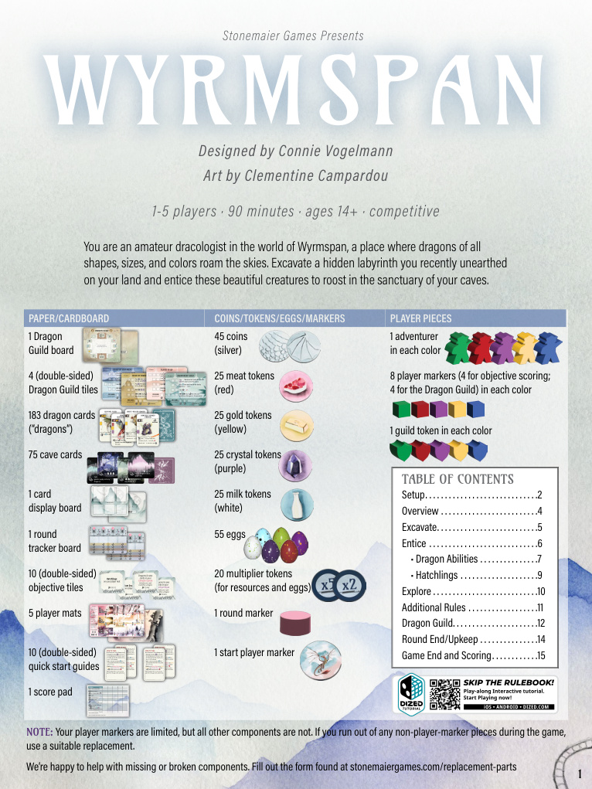
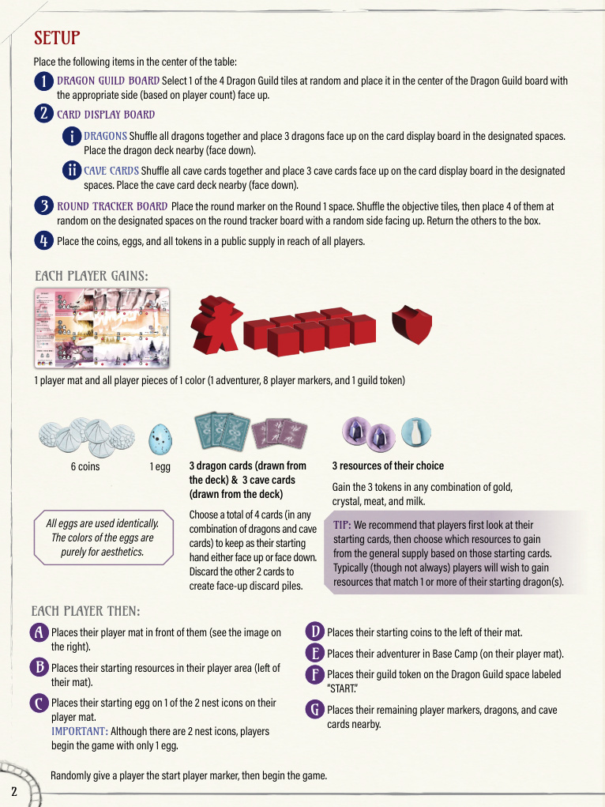
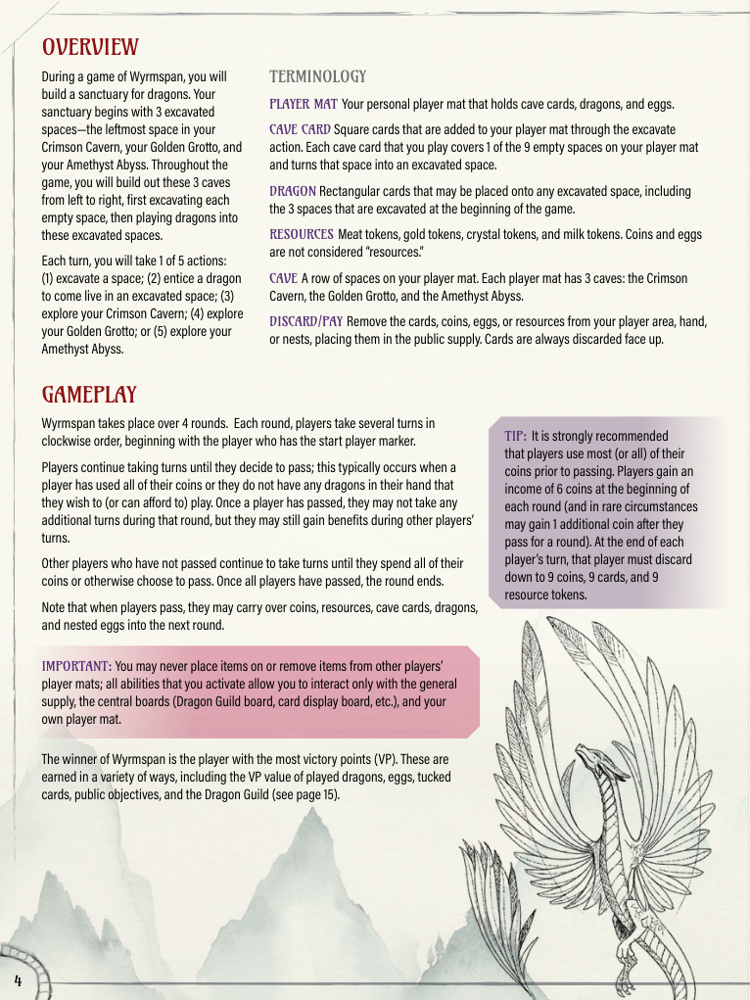
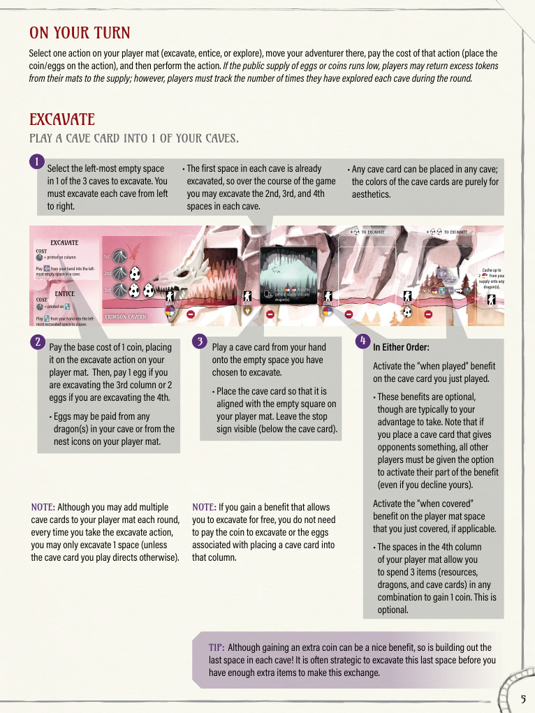
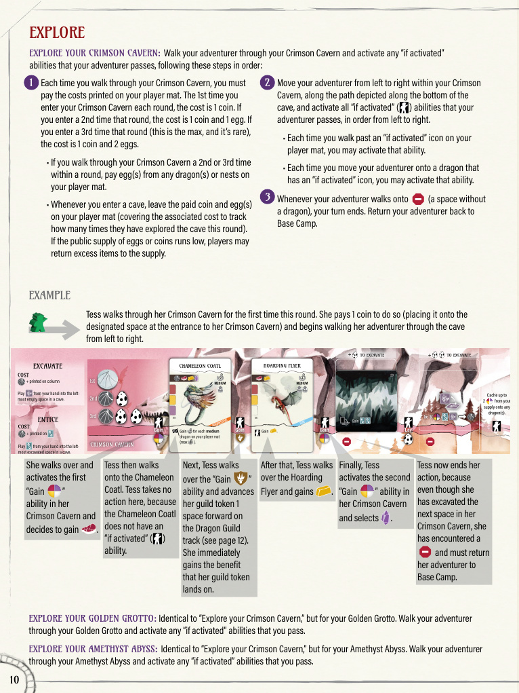
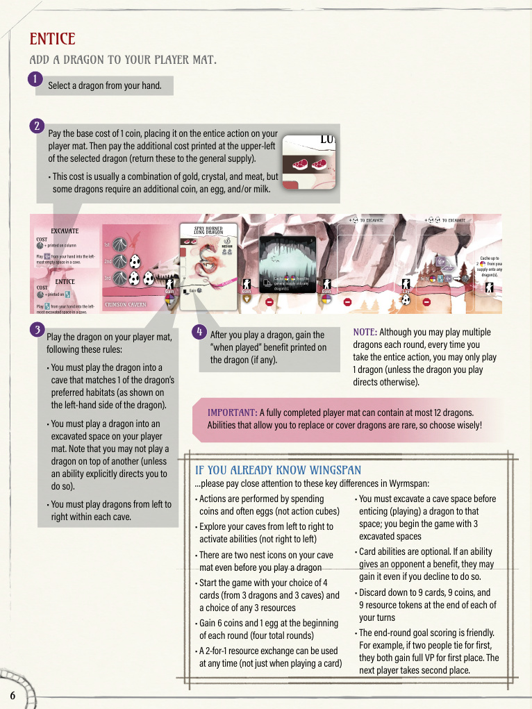
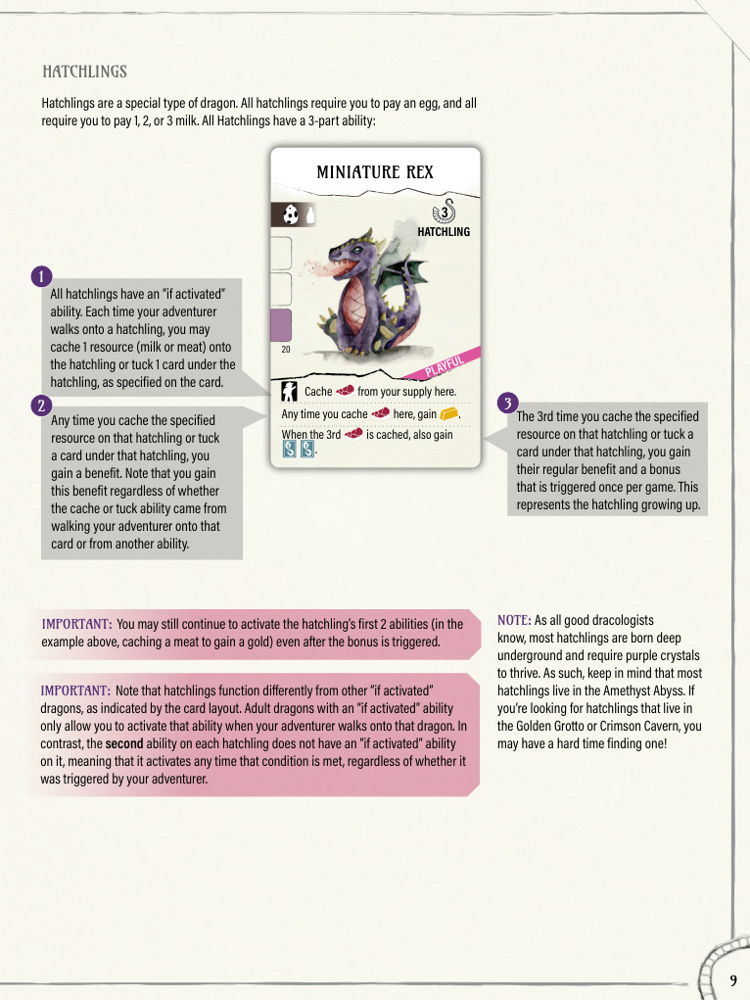
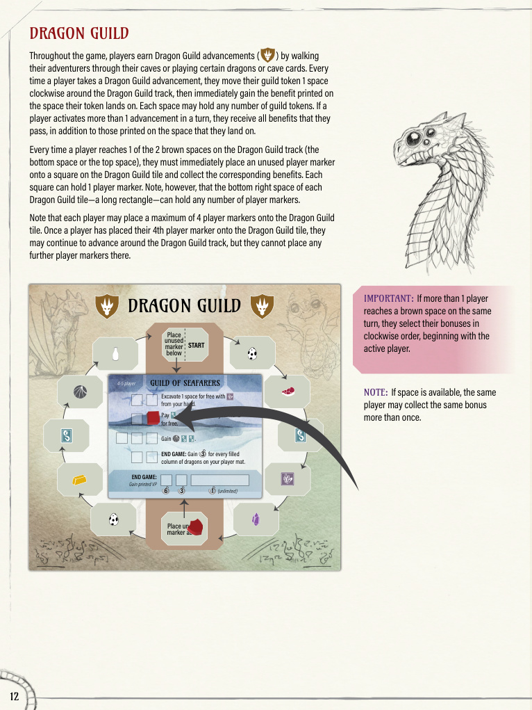
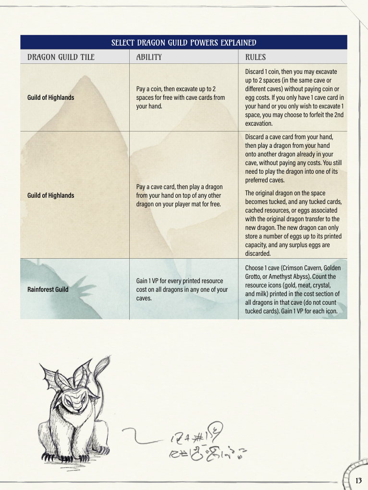

เกมนี้เล่นเรื่องอะไร
ใน Wyrmspan คุณรับบทเป็นนักศึกษาเรื่องมังกรที่ค้นพบเขาวงกตใต้ดินบนที่ดินของตัวเอง เป้าหมายคือค่อย ๆ ขุดถ้ำ, ล่อมังกรเข้ามาอาศัย, และ เดินสำรวจถ้ำ เพื่อจุดคอมโบของความสามารถและสะสมคะแนนให้มากที่สุดภายใน 4 รอบ
เกมนี้ได้แรงบันดาลใจจาก Wingspan แต่ทางผู้พัฒนาระบุชัดว่าเป็นเกมแยกที่มีระบบต่างจากเดิมหลายจุด เช่น การใช้เหรียญแทน action cube, การมี Dragon Guild, ลูกมังกร hatchling, การสำรวจจากซ้ายไปขวา และการเก็บเหรียญหรือทรัพยากรข้ามรอบได้บางส่วน
แกนของเกม
ขุดพื้นที่ใหม่ให้พร้อม แล้ววางมังกรเพื่อสร้างเครื่องจักรทำแต้มจากไข่ ทรัพยากรที่เก็บบนการ์ด การ tuck ไพ่ และเป้าหมายรายรอบ
จังหวะที่ต้องบริหาร
ทุกแอ็กชันใช้เหรียญ และการสำรวจแถวเดิมซ้ำในรอบเดียวจะเริ่มกินไข่มากขึ้นเรื่อย ๆ ทำให้ต้องวางแผนลำดับเทิร์นให้ดี

เริ่มเกมอย่างย่อ
1. จัดกระดานกลาง
สุ่ม Dragon Guild มา 1 แผ่น, เปิดเป้าหมาย 4 รอบบน round tracker, และเตรียม display กลางด้วยมังกร 3 ใบกับ cave card 3 ใบ
2. แจกของเริ่มต้นให้ผู้เล่น
แต่ละคนวาง player mat ของตัวเอง เลือกไพ่เริ่มต้น 4 ใบจากชุดเปิดเริ่มเกม และเลือกทรัพยากรเริ่มต้น 3 ชิ้นตามกติกา setup
3. เริ่มด้วยถ้ำที่เปิดแล้ว 3 ช่อง
ทุกคนเริ่มจากช่องซ้ายสุดของ Crimson Cavern, Golden Grotto และ Amethyst Abyss ที่ถูกขุดไว้แล้ว จึงพร้อมวางมังกรได้ทันทีในแต่ละแถว
4. วางไข่เริ่มต้นและเตรียมเหรียญ
ผู้เล่นแต่ละคนมีรังเริ่มต้น 2 ช่องบน mat วางไข่เริ่มต้น 1 ฟองในหนึ่งรัง และทุกคนจะได้รายรับมาตรฐาน 6 เหรียญกับ 1 ไข่ในแต่ละรอบ
หลักที่ควรจำตั้งแต่ setup
เกมนี้ไม่มีลูกเต๋าทรัพยากรแบบ Wingspan และเริ่มจากมือที่ยืดหยุ่นกว่าเดิมมาก ทำให้การวางแผนรอบแรกเปิดทางคอมโบได้เร็วกว่า

ลูปการเล่น 5 แอ็กชัน
คู่มือทางการระบุว่าในแต่ละเทิร์นคุณจะทำ 1 จาก 5 แอ็กชัน: Excavate, Entice, หรือ Explore หนึ่งในสามถ้ำของคุณ เกมยาว 4 รอบ และผู้เล่นจะผลัดกันเล่นไปเรื่อย ๆ จนกว่าจะเลือก pass ในรอบนั้น
1. Excavate
เล่น cave card จากมือไปยังช่องว่างซ้ายสุดของแถวที่ต้องการ เพื่อขุดถ้ำให้ลึกขึ้น และรับโบนัส “when played” ของการ์ดถ้าการ์ดนั้นมี
2. Entice
เล่นมังกรจากมือไปยังช่องที่ขุดแล้ว โดยต้องลงในถ้ำที่มังกรชอบและจ่ายค่าพิมพ์บนการ์ดให้ครบ
3. Explore Crimson
เดิน adventurer จากซ้ายไปขวาในแถวสีแดง เก็บผลลัพธ์ตามช่องและมังกรที่ถูกกระตุ้นระหว่างทาง
4. Explore Golden
สำรวจแถวสีทอง โดยจังหวะปลายแถวมักช่วยเรื่อง tuck ไพ่และกระตุ้นทรัพยากรที่หมุนเกมได้ดี
5. Explore Amethyst
สำรวจแถวสีม่วง ซึ่งกติกาทางการอธิบายว่าออกแบบมาให้ปลายถ้ำแรงขึ้นเพื่อชดเชยความถี่การ build ที่ต่ำกว่าอีกสองแถว
เศรษฐกิจรอบและเทิร์น
- 1 เทิร์น = 1 แอ็กชัน: จ่ายต้นทุนก่อน แล้วค่อยทำแอ็กชันนั้น
- ต้นแต่ละรอบ: ได้ 6 เหรียญและ 1 ไข่ เป็นเวลา 4 รอบ
- Explore แถวเดิมซ้ำ: ครั้งแรกใช้ 1 เหรียญ, ครั้งที่สองใช้ 1 เหรียญ + 1 ไข่, ครั้งที่สามใช้ 1 เหรียญ + 2 ไข่
- Explore ได้สูงสุด 3 ครั้งต่อแถวต่อรอบ และเมื่อถึง stop sign หรือสุดถ้ำ adventurer จะกลับ Base Camp ทันที
- จบเทิร์นให้ทิ้งลงมาเหลือ: ไพ่รวมไม่เกิน 9, เหรียญไม่เกิน 9, ทรัพยากรไม่เกิน 9
สั้น ๆ ว่าควรคิดอะไรในแต่ละรอบ
- รอบต้น: รีบเปิดถ้ำและวางฐานมังกรให้ครบแถวสำคัญก่อน
- รอบกลาง: เริ่มเลือกว่าจะวน explore แถวไหนซ้ำเพื่อเร่งคอมโบ
- รอบท้าย: มองทั้งแต้มจากปลายถ้ำ, Dragon Guild, เป้าหมายรายรอบ และ end game ability บนการ์ด
- เหรียญเหลือไม่เสียเปล่าเสมอ: ถ้าเก็บไว้ได้โดยไม่เกินลิมิต ก็สามารถพกข้ามไปรวมพลังรอบถัดไปได้



มังกรทั่วไปและ Hatchling
ความสามารถของมังกร
- When played: ได้ทันทีตอนลงการ์ด
- If activated: ได้เมื่อ adventurer เดินผ่านการ์ดนั้นระหว่าง Explore
- Once per round: ได้ช่วงจบรอบ
- End of game: นับคะแนนตอนสรุปท้ายเกม
- ความสามารถส่วนใหญ่เลือกใช้ได้: ยกเว้นความสามารถที่ให้ผลกับผู้เล่นอื่น ซึ่งต้องเปิดสิทธิ์ให้ทุกคนตามกติกาทางการ
สิ่งที่ทำให้ Hatchling ต่างออกไป
- ลูกมังกรทุกใบมีต้นทุนเป็น ไข่ + นม
- ทุกครั้งที่เดินผ่าน hatchling คุณอาจ cache หรือต tuck ตามที่การ์ดระบุ
- เมื่อทำเงื่อนไขเดิมครบครั้งที่ 3 จะได้โบนัสใหญ่แบบ ครั้งเดียวต่อเกม แทนการ “โตเต็มวัย”
- หลังปลดโบนัสแล้ว ความสามารถสองบรรทัดแรกยังคงใช้ต่อได้ตามปกติ


Dragon Guild
- เมื่อได้สัญลักษณ์ advancement ให้ขยับ guild token ตามเข็มนาฬิกา 1 ช่อง แล้วรับผลของช่องนั้นทันที
- ถ้าเดินถึงช่องสีน้ำตาล จะได้วาง marker ลงบน guild tile เพื่อรับโบนัส in-game หรือ end-game ตามช่องที่เลือก
- แต่ละเกมใช้กิลด์เพียง 1 แบบ จึงทำให้แนวทางทำแต้มของแต่ละรอบเปลี่ยนไปมาก
- กติกาทางการระบุว่าถ้าได้ advancement หลายครั้งในเทิร์นเดียว ให้รับผลทุกช่องที่ผ่าน ไม่ใช่แค่ช่องสุดท้าย
การนับคะแนนที่ควรจำ
- เป้าหมายรายรอบเป็นแบบ friendly ties: ถ้าเสมออันดับหนึ่ง ทุกคนที่เสมอได้แต้มเต็มของอันดับหนึ่ง
- ทรัพยากร cache และไพ่ tuck เป็นแหล่งแต้มปลายเกมสำคัญ
- marker บน Dragon Guild จะนับคะแนนเฉพาะ marker ที่วางบนช่อง end-game scoring ที่เกี่ยวข้อง
- tucked cards ไม่ใช่มังกรบน mat เวลานับเงื่อนไขที่ถามหาจำนวนหรือประเภทมังกรบนกระดาน


แหล่งอ้างอิงที่ใช้ทำหน้านี้
สรุปจาก หน้าเกม Wyrmspan, หน้า Rules & FAQ ทางการ และคู่มือ Wyrmspan rulebook PDF